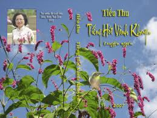
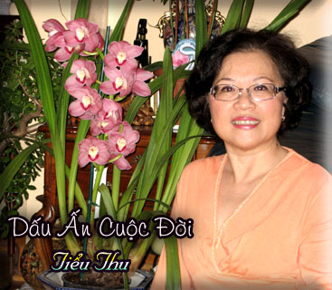

Chương Sáu

iểu Thu là một nhà văn gốc Nam Kỳ, chuyên viết về kỷ niệm những ngày chị sống ở Cao Lãnh, Kontum và Ngả Năm Bình Hòa (Sài Gòn). Lác đác có vài truyện xảy ra trong khung cảnh thành phố Montréal (Gia-nã-đại). Nhưng từ thành phố định cư ấy, chị không quên viết những ngày hoa mộng ở trên 3 địa danh của đất nước Việt Nam mà tôi vừa kể.
Tập truyện ''Tiếng Hót Vành Khuyên'' là tác phẩm thứ hai của nhà văn nữ Tiểu Thu, sau quyển ''Sóng Nước Tình Quê'' xuất bản vào năm 2003. Trong khi giao cho tôi bản thảo của tác phẩm thứ hai vừa đóng thành tập rất đẹp, tác giả có cho biết rằng chị đang đem in nó thành sách. Đây là công trình thập thúy tầm phương (gom góp lông chim trã và tìm hoa thơm) của tác giả. Chị đã kết tập những truyện ngắn đăng trên vài tạp san ở Canada, đặc biệt là tam cá nguyệt san Cỏ Thơm ở Virginia. Đây là sự đóng góp tích cực vào mùa văn chương ở hải ngoại dù đang lúc suy thoái, nhưng dù sao cũng vẫn còn tiềm lực như mớ than hồng âm ỉ cháy dưới lớp tro mỏng.

Cũng như ở tác phẩm đầu tay, mạch văn của Tiểu Thu ở quyển sau vẫn trơn tru và thơm ngát tình quê gợi trên dòng liên tưởng người đọc các loại hương du như dầu mù u, dầu dừa chẳng hạn, khi dùng chúng thắp đèn thì ngọn lửa sáng trắng và tỏa hương thơm man mác. Văn phong của Tiểu Thu thao thao như nước khe ngòi ở đồng rưộng, từ gò nổng nhấp nhô tuôn xuống trũng thấp, xuống ao, bàu, lung, vũng, bật tiếng reo thánh thót và trong sáng. Chị viết văn rất dễ dàng, rất thoải mái, tràn đầy hứng khởi như cánh diều, dải phướn, lá cờ uyển chuyển bay trong cơn gió giữa thinh không bát ngát. Chị ít khi dùng tới lối viết miêu tả (la description) mà thường dùng lối thuyết thoại (la narration). Cũng như cụ Hồ Biểu Chánh hay cụ Vương Hồng Sển, chị kể chuyện tuồn tuột và ngon ơ, như nước trà Huế từ bình tích được rót ron rỏn vào chén sứ mỏng tráng men bạch ngọc. Lối kể chuyện của chị thật hồn nhiên, thật nhí nhảnh và duyên dáng. Nhưng trong lối kẻ chuyện ấy, biết bao hình ảnh kỷ niệm thân thương được hiện ra từng nét tượng hình tuy khái quát mà thật sắc sảo; những lời thuật sự tía lia, vo vảnh một cách nồng mặn.
Đây là đoạn văn trong truyện ngắn ''Dấu Ấn Cuộc Đời''; hai người bạn gái tâm sự dưới mái nhà ở thành phố Montréal, sau nhiều năm xa cách. Họ nhắc lại thời trung học:

Trầm ngâm một chút Lan chợt hỏi Thư:
-- Mầy còn nhớ con Lệ Quân không? Nhà nó gần kho gạo.
-- Tao lạ gì. Hồi xưa nó học lớp tao. Rất thông minh. Cặp mắt nó vừa đen vừa sáng, lóng lánh như hai viên ngọc.
-- Tội nó lắm mầy ơi. Sau 75, tụi tao đã khổ mà nó còn khổ hơn. Vì chồng nó sĩ quan, lương còn chưa đủ sống, sau đó bị đi cải tao, nó làm vất vả nuôi con, bữa đói bữa no. Thằng chồng nó được thả về bèn vượt biên, hứa sẽ bảo lãnh vợ con sang sau. Ai ngờ qua được bên Mỹ, gặp mụ nặc nô cũng bỏ chồng. Hai đứa hạp nhau về cái món... ''gì'' thì mầy biết rồi đó, bèn bỏ luôn vợ con bên nhà, đang mong ngóng từng ngày. Sau cùng con Lệ Quân rứt ruột cho con gái theo dì vượt biên. Chẳng hiểu lên tàu làm sao, mà con nhỏ rớt xuống biển hồi nào không ai hay! Thảm một cái là tới giờ, mỗi lần em nó viết thơ về, vẫn phải nói dối là con bé bình yên, khỏe mạnh. Không ai dám nói thật, vì nó có thể chết đi được Tôi nghiẹp, nó đâu còn trẻ trung gì để làm lại cuộc đời hả mầy. Cả đám tròm trèm nửa thế kỷ hết trơn rồi!
-- Ừ, ngày xưa nhìn nó lúc nào cũng cười, khoe hai cái răng khểnh, cặp mắt có đuôi. Ai ngờ đời nó thảm thương như vậy.
-- Chưa đâu mầy ơi! Mầy còn nhớ con Lan Đài bên lớp tao không? Con nhỏ tóc dài tới thắt lưng, điệu rơi điệu rụng đó. Sau này lấy tên Thanh, anh của nhỏ Hoàng lớp mầy. Sau 75, tên Thanh chạy tuốt qua Mỹ. Gia đình nhỏ Hoàng bị kiểm kê hết. Nghèo khủng khiếp! Mẹ nó từ một bà mệnh phụ phải gánh hàng ra chợ bán. Nhưng sau chịu không thấu, hai ông bà đều bịnh nặng. Túng cùng, con Lan Đài phải hy sinh lấy cán bộ dể đem tiền nuôi bố mẹ chồng. Nghe cứ như là chuyện cổ tích mầy há?
Thư bùi ngùi:
-- Tao chỉ mong đây là những chuyện không có thật.
Sau những tiếng thở dài sườn sượt thương cho số phận không may của đám bạn còn kẹt bên quê nhà. Cả hai im lặng một lúc, chợt Lan cười hi hí:
-- Con Lan Đài mặt coi hiền mà một cây đó mầy ơi. Tao nhớ năm đệ lục,
đứa nào cũng ngố ơi là ngố! Một bữa, giữa giờ ra chơi, bốn năm đứa vây quanh nó, dĩ nhiên trong đó có tao, nó bèn lấy giọng nghiêm trọng: -- Tụi bây phải nhớ cho kỹ. Đừng bao giờ để cho tụi con trai hôn lên má. Biết tại sao không? -- Cả đám ngố lắc đầu, nó giơ một ngón tay lên điểm điểm trong không khí và gằn từng tiếng cốt để cho những lời vàng ngọc của nó đi sâu vào đầu óc ngu ngơ đang chờ đợi kia: -- là vì khi được hôn lên má bên nầy, nó sẽ hôn tiếp má bên kia. Rồi nó sẽ hôn xuống miệng và lần lần xuống cổ... và sau đó (con bé dài giọng ra)... mình sẽ không biết gì nữa..! -- Cả đám ngố nhìn nó một cách vừa khâm phục vừa sợ hãi.
Thư hình dung ra cái cảnh một lũ nhóc hỉ mũi chưa sạch, mặt nghệt ra vì sợ trước cái viễn ảnh bị con trai hôn mà cười chảy nước mắt. Nhứt là sự diễn tả của nhỏ Lan Đài tếu không chịu được. Chẳng bù với tụi nhỏ thời nay. Ở phòng mạch bác sĩ Quân, nhiều đứa mới 12 tuổi đầu mẹ đã phải dẫn tối xin thuốc ngừa thai.
Lối miêu tả một vận sự dưới ngòi bút chạy thoăn thoắt như ngựa phi nước đại của Tiểu Thu chỉ gồm vài nét khái quát rồi bắt chuyền qua lối miêu tả một vận sự khác. Cũng có thể chúng ta nghĩ rằng tác giả trong lúc kể chuyện, có áp dụng một nghệ thuật tả cảnh tàng hình, nghĩa là chị không trình bày những nét tạo hình biểu kiến (có thể để cho chúng ta thấy được) của bối cảnh. Nhưng trong lúc kể chuyện, chị vẫn có đủ năng lực đưa độc giả đứng trước một khung cảnh hay một hoạt cảnh linh động, một và nhân vật sống thực v.v.... Cứ như thế, chị có thể lần lượt tập hợp thành một bức tranh dù đơn sơ nhưng vô cùng linh hoạt. Đó là cách viết văn của các cây bút gốc Nam Kỳ rất hợp với tầng lớp độc giả có khiếu thưởng ngoạn đơn giản: họ chỉ cần thưởng thức cốt truyện, chỉ muốn thả tâm tư mình trôi theo từng diễn biến cốt truyện, không cần đi sâu vào những chi tiết miêu tả chi ly, tỉ mẩn đến độ mà họ cho là rườm rà vô ích. Với lối hành văn như thế này, Tiểu Thu đã có bạn đồng hành như Hải Bằng, Nguyễn Văn Ba... (nam), Phương Hoài Nam, Phượng Khánh... (nữ).
Rồi vừa làm bếp, Thư vưa hồi tưởng lại thuở còn con gái, ở cái xứ Kontum xa tít mù khơi. Quãng đời đo sao mà êm đềm, vô tư lự! Ai chưa ghé qua Kontum, sẽ tưởng rằng nơi đó chỉ có núi rùng trùng điệp, cùng đám người thiểu số (mà dân Việt thường gọi là Mọi cà răng căng tai). Nhưng nếu ở qua, thì sau này, dù có đi tận chân trời góc biển nào, một phần trái tim cũng đã bị xứ Kontum nhỏ bé đó giữ lại! Dân nơi đây là một sự pha trộn của ba miền Nam- Trung - Bắc. Phong cảnh đẹp một các thơ mộng với con song Dakbla bao bọc chung quanh thành phố (có thể thật hiền hòa vào mùa nắng và rất hung hãn vào mùa mưa. Những cơn lũ lụt lắm khi cuốn trôi cả nhà cửa lẫn súc vật hai bên bờ) và thật hùng vĩ với những núi xa xa, mau xanh lam, thuộc dãy Trường Sơn trùng điệp. Cảnh đẹp và lòng người hiền hòa. Cao nguyên lạnh nên con gái cũng da trắng má hồng, không thua gì các tiểu thơ xứ Hoa Anh Đào. Điểm đặc biệt nữa là Kontum cát trắng, không giống Pleiku, dù chỉ cách 50 cây số, mà đất lại đỏ quạch. Mùa mưa rât dơ, mỗi bước đi, cặp chân cứ muốn dính chặt xuống mặt đuờng. Thư theo ba mẹ lên Kontum năm 12 tuổi, đúng lúc vào Đệ thất trường sơ. Những ngày đầu phải diện chiếc áo dài trắng, bước chân đi sao vướng lạ lùng.
Đối với bé Thư ngây thơ đó, các chị Đệ ngũ, Đệ tứ, chị nào cũng đẹp như tiên. Nhưng vì tinh lẻ, nên sau lớp cao nhất là Đệ tứ, phần lớn các chị... theo chồng bỏ cuộc chơi hết trơn! Chẳng là Kontum có sư đoàn 22 Bộ Binh đóng. Sĩ quan đông, nên chỉ cái e lệ gật đầu là các cô trở thành bà úy, bà tá ngay ( học nhiều làm gí cho nó mau tàn phai nhan sắc! ).
Nếu đã từng đọc qua ''Sông Nước Tình Quê'' rồi đọc ''Tiếng Hót Vành Khuyên'', chúng ta sẽ thấy Tiểu Thu yêu thích tuốt luốt những địa danh, những xứ sở mà chị đa từng định cư như Cao Lãnh (Sa-Đéc), Kontum, Ngả Năm Bình Hòa (Sài Gòn), Montréal (Canada). Bất cứ địa danh nào mà chị cư ngụ trong một thời gian dù dài dù ngắn cũng cho chị nhiều kỷ niệm thân thương, niềm lưu luyến sâu đậm huống hồ la những món trân cam giai nhục cùng thổ sản thủy sản ở những nơi đó.
Trừ Montréal ra, các địa danh kia khi đi vào văn chương của Tiểu Thu mang ít nhiều bóng dáng tuổi trăng lên hoa nở của chị. Trăng phì mỹ và sáng như gương chiếu trọn tấm lòng thanh thản, hoa phô sắc bừng hương khắp một góc nhỏ của vườn đời của một cô nữ sinh yêu nồng nàn cuộc sống.
° °
Tập truyện '' Tiếng Hót Vành Khuyên'' gồm 10 truyện ngắn. Xin tóm lược mỗi truyện ngắn như sau:
° ''Cô Nam Kỳ Đáng Yêu'': Đây là cảnh gia đình bà quả phụ Tân thuộc hạng địa chủ. Bà có 3 người con: Cậu trai lớn lưu học ở Sài Gòn. Cô cô gái kế tên Trang sau khi học xong lóp nhứt, lại phải ở nhà lo trau giồi nữ công phụ xảo theo truyền thống của các thiếu nữ theo lễ giáo gia phong thuở cựu trào. Còn cô con gái út tên Cúc thì còn ở quê nhà học bậc tiểu học. Vào dịp nghĩ Tết, Thanh rủ anh ban thân người Bắc tên Huy xuống quê mình ăn Tết với gia đình mình. Tại đây, Huy và Trang phải lòng nhau. Dù ngôn ngữ bất đồng, dù có thành kiến lệch lạc, nhưng cả hai vẫn yêu nhau và đi đến cuộc hôn nhân hạnh phúc. Kết cuộc câu chyện đẹp như chuyện cổ tích Đông Phương lẫn Tây phương hay như chuyện thiên phương dạ đàm của xứ Ba Tư. Ở đây, tác giả làm sống lại cái Tết cổ truyền trên dải đất Nam Kỳ Lục Tỉnh:
Những ngày sau đó Thanh, Huy dọn dẹp nhà cửa đón Tết. Trước sân nhà ông nội có cây lão mai. Năm nào Thanh cũng xin một cành cắm vào cái độc bình da rạn có vẽ bát tiên màu xanh, đặt bên cạnh bàn thờ ông Tân. Chiéc lư đồng được đánh bóng ngời. Mâm ngũ quả chưng trái cây tuơi hực hỡ. Trang o bế nồi thị kho nước dừa với trứng, cá lóc thiệt ngon để ba ngày Tết ăn với bánh tét. Vui nhứt là chiều ba mươi, cả nhà thức canh nồi bánh. Bánh tét nấu trong chảo đụn. Hai người mới khiêng nổi cái chảo đặt trên ba ông đầu rau ngoài sau hè. Phải canh chừng cẩn thận vì đôi khi bánh không cánh mà bay đi mất tăm, chủ nhà chỉ có nước đứng chửi đổng cho đỡ tức! Bốn người ngồi chung quanh nồi bánh. Củi khô nổ tí tách, thỉnh thoảng văng tàn đỏ như pháo bông. Thanh và Huy thay nhau kể chuyện vui khiến Trang và nhỏ Cúc cười lăn chiêng, quên cả buồn ngủ. Tới giao thừa thì bánh vừa chín. Bà Tân cúng giao thừa đón năm mới, rồi mọi người đi ngủ.
Sáng hôm sau khỏi cần kêu réo, ai cũng tự động dậy thiệt sớm để sửa soạn. Hai tên đực rựa chỉ diện quần tây, áo sơ-mi là xong. Thanh pha hai ly cà phê rồi ngồi nhâm nhi với Huy trong khi chờ đợi phái nữ làm đẹp. Bà Tân coi cũng khá mặn mà trong chiếc áo dài gấm màu huyết dụ, nổi bông mai lan cúc trúc vàng ánh. Cổ đeo chuỗi hột vàng, bông tai vàng. Chiếc cà rá hột xoàn chiếu lấp lánh nơi ngón áp út Mái tóc muối tiêu bới như thường ngày, chỉ có giắt thêm cây trâm vàng tám cẩn hột trai óng ánh. Nhỏ Cúc từ trong phòng chạy ào ra như cơn lốc:
-- Anh hai, anh Huy coi em đẹp không nè?
Thanh chọc em:
-- Nhỏ nầy miệng còn hôi sữa... bò mà đã điệu quá trời!
Cúc chu mỏ:
-- Xí em mà còn hôi sữa hả? Cho anh hay trong lớp em...
Huy lật đật chen vô:
-- Anh Thanh trêu bé thoi. Bảo đảm bé Cúc của anh xinh nhát. Chiếc áo đầm
thêu hoa cúc tuyệt quá. Trông bé xinh như cô Công Chúa Bạch Tuyết.
Cúc ngơ ngác:
-- Công Chúa Bạch Tuyết là ai vậy anh Huy?
-- Là cô Công Chúa trong chuyện cổ tích. Thôi, để lần sau anh sẽ mang về tặng Cúc quyển ''Bạch Tuyết và Bảy Chú Lùn''.
Đang nói chợt Huy ngưng ngang, mắt nhìn sững về phía buồng của hai cô gái. Trang từ trong đó bước ra. Huy nhắm mắt lại rồi mở to ra tự nhủ có thể nào là cô Trang của những ngày trước đây??? Cô nàng thấy Huy nhìn mình đăm đăm thì mắc cở hai má đỏ hồng. Thanh quay qua thấy mặt Huy thộn ra coi thiệt tức cười, bèn đưa bàn tay quơ qua quơ lại trước mặt bạn, miệng hô lên:
-- Bớ ba hồn chín vía thằng Huy. Có lạc ở đâu thì về cho mau.
Trang mắc cở:
-- Anh hai. Bộ hổng chọc người khác anh ăn mất ngon hả?
Huy đập vai ban:
-- Thôi mày. Bữa nay mồng một, cấm chọc giận người khác.
Thanh làm bộ ngó trời ngó đất:
-- Thiệt la quá, đâu có mưa gió gì mà sao có người bị sét đánh trúng vậy kìa? Phải không Huy?
Huy cười đáp lững lờ:
-- Ừ, thì cũng có chút chút!...
Từ trước tới giờ, Thanh vẫn coi hai cô em còn nhỏ dại lắm. Bữa nay thấy thằng bạn thân bị em mình hớp hồn, Thanh mới để ý dòm kỹ và bỗng cảm thấy lần đầu chàng mới thật sự nhìn thấy em. Cái áo nhung màu hồng đào tôn làn da trắng mịn của Trang đẹp lên bội phân. Cặp lông mày nhổ khéo khiến đôi mắt đen huyền như to hơn. Nàng đánh phớt một lớp phấn hồng lên má và đôi môi cũng được tô lớp son hồng lợt. Cổ chỉ đeo cây kiềng vàng trơn. Tai đeo đôi bông hột xoàn nhỏ nhưng chiếu lấp lánh. Ngón tay giữa đeo chiéc cà rá nhận hột trai thật đơn sơ. Tóc chải kiểu tango phồng trước trán và mái tóc bữa nay được kẹp bằng chiếc nơ cùng màu áo. Ử, con nhỏ coi cũng đẹp quá, hèn chi...
° ''Tiếng Hót Vành Khuyên'': Đây là hồi ức của cô Mai, sau khi nghe bài hát ''Trường Làng Tôi'' trong buổi tối văn nghệ trường Chu Văn An.
Khi còn thơ ấu, cô bé Mai học ở các trường tại làng Tân An thuộc quận Cao Lãnh. Trường gồm hai lớp chót do thầy Tánh đảm nhiệm. Muốn đi đến truờng phải trẩy đò ngang do người cha nuôi của Mai đưa đò. Sau đó là ngôi trường chỉ có lớp năm do chú họ của Mai tên Thuận dạy. Chú vừa dạy học vừa hành nghề xem mạch hốt thuốc. Năm sau, Mai không rõ vì nguyên nhân gì mà chú Thuận dẹp trường. Nguời chú họ khác tên Sáu Lân mở trường gồm ba lớp. Trường có cô giáo Bích và cô giáo Liêu. Cô Bích và ông hiệu trưởng Sáu Lân phải lòng nhau. Nhưng cha mẹ chú bắt chú cưới cô gái nhà giàu tên Thu làm vợ. Chú đành chiều theo cha mẹ, nhưng vẫn còn thậm thụt dan díu với cô Bích. Bà vợ nổi ghen đánh ghen một trận, cô Bích phải xin đổi đi tỉnh khác.
Khi Mai lên lớp nhì, phải theo mẹ qua Phong Mỹ để tiếp tục việc học. Trường có bốn lớp năm, ba, tư, nhì. Thầy Hiệu trưởng Lương người Bắc tốt nghiệp trường Sư Phạm, khi đổi về Phong Mỹ có mẹ theo. Bà cụ nhứt định cưới cô Bạch thùy mị đoan trang cho con trai mình. Nhưng thầy đang tự tình với chị Kim Sa cùng ngồi lớp nhì với Mai. Đám cưới vừa tổ chức thì gia đình Kim Sa thưa với Hội Đồng Xã là thầy Lương dụ dỗ chị Kim Sa tơi nỗi chị mang bầu. Thầy bằng lòng bãi hôn với chị Bạch và chịu cưới Kim Sa, chịu trách nhiệm là tác giả cái bầu... giữa tiếng khóc bù lu bù loa của bà mẹ. Thì ra thầy âm mưu với Kim Sa tạo ra cái bầu chỉ ở cái miệng gia đình của Kim Sa mà không hề có cái thai nằm trong cái bầu. Và chẳng hiểu cả hai có làm cái vụ tiền dâm hậu thú hay không? Thế là bà cụ đành cưới chị Kim Sa cho con trai mình.
Truyện ngắn này được diễn tả bằng lời thuật véo von, nêm thêm mắm muối, rắc thêm tiêu tỏi hành ớt, đủ cả... Tác giả không quên kể luôn thằng bạn trong lớp ve vãn Mai, ngoài cách vẽ hình hoa lá rất đẹp mà còn ngó lén cô bé nũa. Văy Mai là ai? Hỏi tức là trả lời rồi. Vì có ai ngoài cô bé tiền thân của nữ sĩ Tiểu Thu chớ ai trồng khoai đất nầy?
° ''Thằng Luợm'': Đây là đứa con nuôi của vợ chông Sáu Hiến. Vợ thì thương yêu nó bằng tám lòng ngưòi mẹ, còn chồng thì chẳng đối xử khắc bạc gì với nó, phiền một nỗi mỗi khi say rượu ưa về nhà đánh chưởi vợ con. Chú Sáu không có việc làm nên ngày ngày đặt trúm, nôm cá để kiếm ăn. Còn thím Sáu giúp việc cho ông bà Hội Đồng Vị. Bạn thơ ấu của Lượm là con Hiếu. Cha của Hiếu nuôi rẻ con trâu của Hương Quản Cư. Trâu chết, cha của Hiếu không có tiền bồi thường, phải ngồi tù. Mẹ Hiêu bắt con chị lớn của Hiếu ở đợ dể lấy tiền độ nhật Đã vậy mụ sanh tâm ngoại tình với chú Tư Lầu. Biết Hiếu nghèo khổ, bữa đói bữa no, Lượm tìm cách giúp đỡ con Hiếu bằng cách san sẻ miếng ăn cho Hiếu.
Nhà ông bà Hội Đồng Vị có cô con gái tên Tố Oanh cùng chồng con từ Sài gòn về chơi, lại còn rủ thêm bà bạn tên Ái Loan. Lượm được đề cử lau chùi bàn ghế để đón khách và nhứt là bậu bạn với con gái bà Ái Loan tên Cúc Phương lên mười cùng hai con cô Tố Oanh là con bé Tố Ái lên tám và thằng bé Linh lên mười. Lượm bày đủ trò chơi cho 3 đùa trẻ nên được chúng nó mén. Riêng bà Ái Loan cũng cảm thấy mình quyến luyến thương yêu thằng Lươm mà không hiể tại sao? Một hôm nọ vì muôn hái bông sen cho Tố Ái, Lượm ngã xuống ao sen, mình mẩy ướt mem. Bà Ái Loan cổi áo nó, lau mình mẫy cho nó, khám phá cái bớt son trên ngực nó. Bà sực nhớ thuở xưa mình là người đẹp tỉnh Bình Dương đã từng yêu một thanh niên tên Sơn; cả hai dan díu nhau, cô thiếu nữ Ái Loan kia có bầu. Cha mẹ nàng bảo bà vú đưa nàng lên Đà Lat sanh nở rồi đem con trai tư sinh kia cho một cặp vợ chồng ở tận Nam Vang và bắt buộc nàng phải lấy Thuần, bạn của Hưng (anh của nàng) vì cha mẹ Thuần và cha mẹ Ái Loan đã đính hôn cho hai trẻ.
Vụ cưỡng hôn chỉ tạo tấm thảm kịch đồng sàng dị mộng cho Ái Loan. Ròi sau đó Ái Loan mang bầu, Thuần khám phá ra vợ mình đã có con với người khác trước khi kết hôn với mình. Đứa con trong bụng nàng không phải là con đầu lòng của nàng, mà là thứ con rạ. Ái Loan sanh cho Thuần đứa con gái đặt tên Cúc Phương. Cả hai cứ gay cấn lục đục với nhau đi đến chỗ ly dị khi Sơn cùng dạy chung trường trung học với Hưng và tìm cách thăm Ái Loan với tư cách người bạn. Thuần ghen tưông dằn thúc nàng nên nàng xin ly dị, sống quãng đời cô đơn với con gái.
Thấy được bớt son trên ngực Lượm, bà Ái Loan liền về Sài Gòn hỏi bà vú của mình về việc cha mẹ mình đem con mình cho người khác ở nơi thật xa. Bà vú khai thiệt mọi sự. Á i Loan tìm gặp lại Lượm. Tác giả Tiểu Thu đã thay thế Ngọc Hoàng Thượng Đề giũ sổ một cuộc hôn nhân cưỡng ép và làm cho mẫu tử được trùng phùng. Chưa hết đâu, trong lúc Lượm đi ra đám bắp, chị thay Ngọc Hoàng bày cho nó gặp một cảnh đánh đô vật ạch đụi giữa chú Tư Lầu và má con Lượm trong ruộng bắp. Eo ơi, chị có bao giờ để cặp mắt nghịch ngợm của chị thoát khỏi chuyên lạ lùng đối với trẻ nít nhưng rất... hấp dẫn đối với người lớn đâu?
... Ăn cơm trưa xong, thằng Luợm theo lời dan của má nó, đi ra ruộng bắp của chú Tư Lầu mua một chục. Nó băng qua lộ mới thì tới ruộng bắp xanh rờn. Những trái bắp no tròn nằm xiên xiên trên những cái lá dài, uốn éo, phất pho theo chiều gió. Lượm tới cái chòi lá nhưng không thấy chú Tư Lầu đâu cả. Nó nghĩ chắc chú đang hái bắp đâu đây, nên cứ vạch lá đi theo luống dất giữa hai hàng cây thẳng tắp. Đang đi bỗng nghe có tiếng gì là lạ nên nó dừng lại ngó dáo dác. Hình như có tiếng rên rỉ đâu đây. Lượm vảnh lỗ tai lên nghe, rồi lần lần theo tiếng rên đi tới. Bỗng nó sựng lại vì cách chừng đó hai ba luống bắp, thấp thoáng sau những cây bắp sai oằn trái, rõ ràng là chú Tư Làu và má con Hiếu đang... dánh nhau! Hình như tiếng rên đau đớn là của má con Hiếu. Thằng Lượm hoảng hốt thối lui ra khỏi ruộng bắp, chạy một mạch về kiếm con Hiếu. Con nhỏ đang ngồi truớc hàng ba nhìn vơ vẩn ra đường, mặt lộ vẻ buồn thiu. Thằng Lượm vừa kéo tay con nhỏ vừa lắp bắp:
-- Theo tao lẹ lên. Má mầy với chú Tư Làu đang vạt lộn ngoài đám bắp.
° '' Mình Ơi!''. Đây là hai câu chuyện hôn nhân của một người đẹp tên
Thanh Mây ở Đốc Vàng. Cô là con của bà Hương Hào Bá, chủ nhân tiệm bán hàng vải khá giàu. Qua cô bạn Ngọc Châu, cô được quen với cậu Út Nhơn, con ông bà Hội Đồng Đáng ở Long Xuyên nổi tiếng giàu có danh giá. Cậu tìm cách ve vãn Thanh Mây và kỳ kèo với mẹ để cưới Thanh Mây cho bằng đưọc. Bà Hội Đồng Đáng cũng chiều con nên đi dạm hỏi Thanh Mây cho con. Nhưng bà Hội Đồng Đáng tỏ lời chê bai với má của Ngọc Châu rằng bên bà Hương Hào Thi không môn đăng hộ đối với gia đình mình. Lời chê đó lọt vào tai cô Kim Anh, cô nầy từ lâu vốn thèm thuồng được làm vợ cậu Út Nhơn. Kim Anh tìm cách thuật lại lời miệt thị của bà Hội Đồng cho Thanh Mây nghe. Vì tự ái và cũng vì chưa yêu Út Nhơn sâu đậm nên Thanh Mây buộc mẹ hồi hôn. Sau đó ít lâu, qua trò mai mối của người bác dâu, Thanh Mây được bà Cả Trọng dắt con trai là cậu Tư Tân đến nhà bà Hương Hào Bá để coi mắt Thanh Mây cho cậu Tư. Cậu Tư nầy quá đẹp trai gặp một cô nàng Thanh Mây yêu kiều diễm lệ thì dĩ nhiên hai bên gây cú sét nổ rầm rĩ cho nhau. Thế là cuộc hôn nhân thành tựu tốt đẹp.
Nhưng khi về nhà bà Cả Trọng làm dâu, Thanh Mây mải mê lo việc quán xuyến tề gia nội trợ mà thiếu mặn nồng với chồng. Cậu Tư Tân ngoại tình với cô Kim Phụng. Cô này là con người tá điền của ông Cả Trọng. Mợ Tư Tân được cô em chồng thóc mách nên tìm cách bắt quả tang chồng mình tổ chức làm đám... cưới lén lút với Kim Phụng mà lễ cưới chỉ có chú rể và cô dâu. Mợ toan làm dữ thì ông chồng lẹ tay xớt vợ lên xe đạp đưa vợ về nhà để năn nỉ xin vợ tha tội.
Thấy vợ chịu mở miệng, cậu Tư mừng húm, đi bằng hai đầu gối, sấn tới:
-- Thôi, thôi mình tha thứ cho anh nghen mình. Anh thề mà. Cô Phụng thì
cũng là chơi qua đường. Anh chỉ thương một mình thôi. Anh nói láo Bà bắn.
Mợ Tư trề moi, xí một tiếng dài thòn đượm mùi khinh bỉ:
-- Thiệt tình, Tiết Đinh San cầu Phàn Lê Huê hồi xưa chắc cũng còn thua
anh xa. Bữa nay rán mà suy nghĩ lại đi. Hồi nào tới giờ anh hứa, anh thề có bao nhiêu lần, mà có lần nào anh giữ lời được hay không?
Mợ càng nói càng tức tưởi. Cậu Tư vẫn còn quỳ, thấy vợ nói vậy thì lật đật ôm giò của mợ đang thòng dưối đất:
-- Không không, lần nầy anh nói thiệt. Anh thề độc cho mình tin.
-- Thôi đi. Độc tới cỡ nào tui cũng đã nghe đầy hai lỗ tai rồi. Nếu lần nầy anh thành tâm thì rán quỳ đó cho tới sáng.Tui mệt lắm rồi. Bây giờ để yên cho tui ngủ.
Mợ nói xong thì nhẹ hất cặp giò để rút khỏi vòng tay ông chồng đang ôm cứng ngắt. Không ngờ cậu cũng quyết bám trụ tới cùng, không chịu buông ra. Hai bên giằn co níu kéo một hồi, cái quần lãnh Mỹ A lưng thun láng mướt chống cự không nổi... Cậu thừa thắng xông lên, vì biết đây là cơ hội cuối cùng có thể làm xiêu lòng bà vợ đang giận cậu tái tê! Con bé Thanh My ra đời chín tháng mười ngày sau đó.
Vẫn là một đề tài cũ của các cây bút viết truyện đồng quê, vẫn là cách diễn tả nghịch ngợm với giọng điệu líu lo trong bút pháp của tác giả, nhưng cái hấp dẫn của câu truyện như lúc nào cũng mới đối với kẻ tha hương ôm nặng tình cố hương thuở còn bán khai với tập tục cổ truyền và với thứ tình cảm đơn giản mà lại đượm đà niềm thiêt tha của dân tộc.
° ''Thoáng Hương Xưa'': Cùng với ''Dấu Ấn Cuộc Đời'', truyện ngắn này
là đề tài sâu sắc nhất trong tập truyện. Truyện đầu như sau: cô Kim, thư ký của Bác sĩ Thanh. Trong cuộc du ngoạn ngắn, cô đi ngang qua ngôi nhà đóng cửa kín mít của cặp vợ chồng bổn xứ là Jacques và Marie Trudeau. Họ đã lần lượt qua đời cách đây ba tháng. Cả hai cứ cãi vả hà rầm suốt trên 60 năm chung sống. Thế mà sau khi chôn cất chồng xong, bà Marie nhứt định không ăn uống để từ từ theo chồng về bên kia thế giới.
Trở về phòng mạch, Kim gặp người da đen tên Valentin làm việc ở Caisse Populaire đến xin khám bịnh nhức đầu vì theo lời hắn, dù làm việc siêng năng, nhưng tại sao hắn vẫn bị mấy cô bạn đồng nghiệp da trắng chê hắn ta lười biếng. Hắn nhứt đầu vì lời chê bất công ấy đã đành mà cũng có thể hắn nhức đầu vì tại sao người da trắng khinh thường người da đen.
Người đến thứ hai là ông già Phan. Ông cho Kim biết vợ chồng ông về viếng tỉnh Châu Đốc, nổi tiếng có nhiều mắm ngon nhất Việt Nam. Bà vợ mê ăn đủ thứ mắm nên bị đứt mạch máu chết đi để ông ở lại cô đơn.
Rồi tên Jacques Gagné vốn là dân Canadien 100 % và cũng vốn là thứ ký sinh trùng ăn bám xã hội. Thân thể, tóc tai hắn bẩn thỉu; mùi hôi nồng nặc tỏa ra tùm lum tà la. Hắn đến xin thuốc ngủ vì từ ngày chí tối, hắn chỉ coi Tivi và uống bia lu bù.
Đang lúi húi xếp hồ sơ thì Kim nghe cô bạn Mai báo tin gia đình vợ chồng cô Nga tan nát vì bà mẹ chồng ó đâm dèm pha để gây xào xáo cho vợ chồng con trai mình. Cho nên từ chỗ cãi vả đi đến chỗ thằng con điên tiết đánh đập vợ thừa chết thiếu sống. Nga phải nhờ cảnh sát can thiệp và được cùng đứa con tạm trú nơi cơ quan bảo vệ phụ nữ. Còn ông chồng bị đưa vào bịnh viện tâm thần. Ác nghiệt cho hoàn cảnh hơn nữa là Nga đang mang bầu được 3 tháng.
Về những tấm thảm kịch gia đình kiều bào, Kim nhớ lại một ông già nọ được con bảo lãnh qua Canada. Ông vui sống với công việc làm vườn. Dè đâu một ngày nọ ông bị cảnh sát hỏi tội vì ông đái bậy trên sở vườn của mình nên bị người hàng xóm thưa với các đấng ''bạn dân'' rằng ông cốt ý ''khoe của''. Ông già tức giận đòi về Việt Nam để được tự do ''tưới cây'', chẳng sợ ai làm mỏng làm dầy, làm khó làm dễ...
Người khách sau cùng là cô nữ quái bụi đời vốn dân bản xứ đến xin thuốc ngủ lẫn thuốc an thần vì thằng bồ của ả đánh cướp nhà băng bị tù nên thần kinh ả căng thẳng.
Cuối truyện là Kim bắt gặp mùi nước hoa ở đâu thoảng đến. Kim nhớ đến cô bạn chí thân ngày xưa tên Lệ Hồng. Cô ta chỉ thích nước hoa hiệu Tabu, không chịu thay dổi thứ nào khác. Kim nhớ luôn bao kỷ niệm giữa Kim và cô ta trên đất nước quê hương trong tuổi thanh xuân lãng man mộng mơ.
°''Dấu Ấn Cuộc Đời:' Trong truyện ngắn này, tác giả Tiểu Thu dựng hai cảnh chị em thỏ thẻ trong đêm dưới mái nhà của cô Thư tại thành phố Motréal (Gia-nã-đại). Lần đầu, Thư và Lan đôi bạn cũ học trường sơ ổ Kontum sau nhiều năm xa cách được dịp hàn huyên trong chuyến Lan đến Montréal viếng Thư. Lan kể hoàn cảnh bi đát của hai cô ban chung là Lệ Quân và Lan Đài. Xin xem lại đoạn kể được bút giả trích ra ở phần đầu bài viết này. Trong đêm tâm sự đó Thư có nhắc tới Kim Ánh, cô bạn chung thứ ba vốn là đầm lai xinh đẹp. Trước đó, Kim Ánh có phone từ Mỹ cho Thư có hẹn qua Motréal thăm Thư. Ít lâu sau đó, cũng lại có màn chị em thỏ thẻ đêm thanh vắng. Kim Ánh kể lại cuộc đời ba chìm bảy nổi chín cái lênh đênh của mình cho bạn nghe. Truyện kể như sau: Kim Anh nghe lời đường mật và tin tưởng cái xảo kế điêu mưu của Minh để gặp cảnh chồng chúa vợ tôi, gặp bà mẹ chồng lựu đạn nên cực nhục trăm bề. Khi Cộng Sản xâm lăng miền Nam, Minh đi học tập. Bà mẹ chồng sợ con dâu lai Âu của mình sẽ gây cho bọn Cộng Sản làm khó dễ mỉnh nên đuổi 8 mẹ con Kim Ánh ra khỏi nhà. Sau thời gian điêu đứng, Kim Ánh gặp quới nhơn giúp đỡ buôn bán thuốc Tây nên sống khá vững. Cô gặp được anh chàng quân tử tên Phương giúp cho hai đứa con trai đầu của cô vượt biên bằng đuờng bộ. Còn hai đứa con kế trong chuyến 6 mẹ con vượt biên bằng đường biển thất bại, bị mất tích. Sau đó, Kim Ánh được Hội Hồng Thập Tự cho biết hai đứa con mất tích kia đã được một gia đình bên Mỹ bảo lãnh. Lần vượt biên thứ ba, Kim Ánh lại bị thất bại, bị tù, nhưng nhờ chàng quân tử tên Phương kia tim cách giúp cô được phóng thích để cùng nhau trở thành vợ chồng và cùng vượt cbiên trót lọt qua Mỹ. Sau thời gian lận đận trong cuộc mưu sinh tại xứ người, nhờ nghề bán fastfood với các món ăn Việt Nam mà Kim Ánh trở nên giàu có dể nuôi 10 đứa con (8 đứa con em, 1 đứa con anh và 1 đứa con của chúng ta).
Bao giờ cũng vậy, Tiểu Thu không bao giờ ly khai lối viêt tếu đậm tếu lợt. Xen giữa từng đoạn kể lể từng tấm thảm kịch kinh hoàng trong cuộc đời, hễ được dịp tốt là chị xỉa vài câu trào lộng, vài cụm tu hoặc vài ngữ pháp nghịch ngợm, ranh mãnh ranh mương. Cho nên những kẻ nào ''lỡ'' đọc văn chương của chị, bút giả bảo đảm chẳng có ai có thể ngủ gục trên trang sách cả. Đó là cái triết lý vui sống luôn luôn tươi rói của chị: Dù đời có ra sao thì hãy cứ vui lên, vui được lúc nào hay lúc ấy, dù vui một ngày, dù vui một giờ, ''dẫu một phần ba phút, góc tư giẫy'' (nói theo Nguyễn Bính) đi nữa.
° ''Dưới Cội Sung Già'': Truyện gồm hai thế hệ: đời bố mẹ và đời con. Số
là Hậu và Lãng là đôi bạn thân; cả hai cùng đeo đuổi Cẩm Vân. Rốt cuộc, Hậu chiếm được trái tim người đẹp và cưới Cẩm Vân làm vợ. Lãng đau khổ, cưới Mai làm vợ nhưng không yêu vợ. Cẩm Vân sanh cho Hậu một trai, đặt cho nó cái tên Tú. Còn Mai sanh cho Lãng một trai tên Đức và một gái tên Liễu Nhu. Nhưng khi sanh đứa thứ ba xong, Mai chết trong lúc Lãng ở sòng bạc. Chàng quyết tâm báo thù Hậu, dụ dỗ Hậu bài bạc. Cẩm Vân tìm Lãng năn nỉ Lãng đừng đưa chồng mình ngã vào bức tường thứ ba trong tứ đổ tường (tửu, sắc, tài phiến). Nhưng vốn đa lập tâm báo thù thì Lãng vẫn tiếp trục đẩy bạn vào con đường cùng của thú đỏ đen. Rốt cuộc, vì tiêu tan sự nghiệp và thiếu nợ như chúa Chổm, Hậu tự tử. Cẩm Vân kìa khỏi tỉnh nhà, sau khi thống trách Lãng dữ dội. Ngôi nhà của Hậu bỏ hoang, người trong xóm đồn rằng đêm đêm có vong linh Hậu hiện về.Vài năm sau, Cẩm Vân tái giá với một phú thương Hoa Kiều ở Nam Vang, nuôi con trai là Tú ăn học thành tài.
Tú trở về sửa sang căn nhà của thân phụ, nhưng giấu người lối xóm tên thật của mình. Chàng xưng là Hoàng, tìm cách quen biết Liễu Nhu, con gái của Lãng và Mai. hiện giờ cô thiếu nữ ôn nhu xinh đẹp kia đang ở chung với bà nội và người vú. Vtrong khi quyết chiếm đoạt trái tim của nàng. Tú nhận thấy Liễu Nhu là một cô thiếu nữ hiền hậu, giàu lòng nhân từ, thường giúp đỡ dân nghèo trong xóm. Lúc đó chàng mới thú thật mình là Tú rắp tâm về Sa Đéc để quyến rũ nàng ô danh xú tiết bằng cách đưa nàng vào cảnh mang hoang thai để báo thù kẻ làm hại cho chàng tự tử, cua nhà chàng tan nát. Chàng còn cho Liễu Nhu biết rằng sau khi suy đi nghĩ lại, việc báo thù rửa hận chỉ gây thêm cái ác nghiệp oan oan tương báo mà thôi; huống hồ chàng chân thành yêu nàng bằng cả con tim nguyên vẹn. Vả lại, Tú cũng đuọc biết ông Lãng cũng đã từng tỏ lời hối hận với bà Cẩm Vân trước khi bà bồng con đi xa. Tú xin cưới Liễu Nhu làm vợ và được nàng nhận lời.
Cốt truyện hơi giống các cuốn phim tình cảm xã hội Ý-đại-lợi đã từng đưa tên tuổi các diễn viên Ý và diễn viên Âu Châu, Mễ-tây-cơ lên đài vinh quang như Marta Toren, Maria Félix, Yvonne Sanson, Yvonne Furneaux, Nadia Gray, Anna Maria Ferrrero, Gianna Maria Canale, Lucia Bose, Eleonora Drossi Drago, Eva Bartok, Rossana Podesta, Silvanna Pampanini, Antonella Lualdi... (nữ), Amédéo Nazzari, Ettore Manni, Jacques Sernas, Franco Interlenghi, Tomas Milan, Pierre Crossoy, Vittorio Gasmann, Pedro Armendariz (nam)... Nhưng ở đây, tác giả tiết kiệm súng đạn, gươm giáo, máu me và ác mộng hơn. Nhờ cái kết cuộc chói chan màu hồng hạnh phúc nên các độc giả bà già trầu têm cho mình một miếng trầu ngon, các độc giả ông già ống vối nhồi thêm thuốc lá Gò Vấp vào tẩu thuốc, các người trẻ tuổi trổi giọng du dương ; họ vừa hút thuốc hoặc ăn trầu, ca hát vừa hả hê thưởng thức cái hậu tốt lành của truyện kể dưới ngòi bút của nhà văn nữ đất Cao Lãnh này.
° ''Đời Còn Có Nhau'': Đây là tình sử của cậu Út Hào, con ông Hội Đồng
Phú, tốt nghiệp trường Đại Học Dược Khoa về quê vinh quy bái tổ. Cha mẹ cậu đã chọn cô Thu Thảo dung nhan sắc sảo, con gái bác sĩ Đương cho con mình cưới làm vợ. Nhưng khi về quê nhà, cậu nhận thấy Lụa, con gái mụ tớ Hai Nhiên trổ mã mỹ miều, đâm ra thèm khát cô ta nên tìm cách quyến rũ cô ta, chiếm đoạt tấm băng trinh cô ta. Sau đó, cậu cưới Thu Thảo. Hai vợ chồng chẳng những môn đăng hộ đối, lại còn đẹp đôi nên cả hai mê man tàng tịch với nhau. Lụa sau lần ân ái với cậu Út Hào lỡ mang thai. Ông bà Hội Đồng cho mẹ con thím Hai Nhiên một số tiền bảo họ bỏ đi cho thật xa.
Ai dè trong chuyến đi ra Vũng Tàu hứng mát, cậu Út Hào bị tai nạn xe hơi, rồi bị chứng bất lực sinh lý. Từ đó vợ chồng cậu sống trong cảnh đồng sàng dị mộng. Thu Thảo thường vắng nhà để lui tới với người ban trai cũ. Bà Hội Đồng Phú buồn rầu lo sợ con mình bị tuyệt tự và hối hận đã đuổi Lụa ra đi nên gia đình bà bị Trời trả báo. Về phần Lụa, nàng đã yêu Hào khi vừa mới lớn. Tuy bị Hào đánh trống bỏ dùi nhưng nàng tự hứa sẽ ở độc thân suốt đời để nuôi con nên người. Không được làm vợ Hào, nhưng có một đứa con với Hào là nàng đủ mãn nguyện rồi. Lụa sanh một đứa con trai đặt tên là Hiệp. Ai ngờ má con của thím Hai Nhiên ăn nên làm ra, có cơ ngơi vững chắc, tuy không giàu có gì. Tình cờ, Hào gặp Lụa, hiện làm chủ sạp vải ở ngoài chợ Bến Thành. Cuộc tái ngộ dần dà đi đến chỗ thông cảm nhau, mọi sần sưọng gút mắc tan rã. Nhưng Hào nghĩ mình bất túc sinh lý nên không dám đòi hỏi gì ở Lụa, chỉ mong được nhìn nhận Hiệp là con chính thức của mình. Nhưng Lụa gieo cho chàng một hy vọng rằng nàng sẽ đưa chàng tới ông danh y giỏi khoa cham cứu để giúp chàng lấy lại một thể chất bình thường. Câu chuyện chấm dứt ở đây.
Ở truyện ngắn này, Tiểu Thu đề cao tấm làm cao đẹp của mẹ con thím Hai Nhiên. Chị không đả kích hay buộc tội Thu Thảo. Hào dưới ngòi bút chị là kẻ không luyện đạt nhân tình thế thái. Khi du học ra ngoại quốc, chàng đã làm tình với Mylène, em gái của bạn chàng, sống cuộc đời tình dục phóng khoáng, không yêu nhau nữa là anh đi đường anh, tôi đuờng tôi. Với Lụa, chàng chơi hoa cho biết mùi hoa, rồi bỏ mặc nàng gánh vác hệ lụy mà chàng quên rằng ở xứ ta, người đàn bà sa ngã khó làm lại cuộc đời. Vậy mà Lụa can đảm gánh vác cái tình yêu đơn phương của mình, không oán trách Hào. Còn thím Hai Nhiên bị tên hào phú cưỡng bức mới sinh ra Lụa, cũng không oán trời trách đất. Gặp được chú Hai Nhiên cưới làm vợ rồi ít lâu lại gặp cảnh góa bụa, thím nhận nuôi thằng Cầm, đứa con riêng của chồng, coi nó như con ruột. Và dù bị bà Hội Đồng cho một ít tiền rồi đuổi đi, thím cũng không oán trách bà vì thím chỉ nghĩ lúc thím chửa hoang đẻ lạnh, bà đã ra tay cứu giúp thím.
° ''Hạnh Phúc Nơi Nào?'': Đây là cuộc đời của Hoa, một thiếu nữ bạc phuớc, đa truân đa khổ lụy. Sớm mô côi mẹ phải ở với cậu ruột, bị mợ dâu ngược đãi. Sau đó, đuợc bà Năm, một nghiệp chủ giúp đỡ cưu mang nên khi lớn lên, từ con Xíu ốm o lu lít trở thành một cô Hoa xinh đẹp. Rồi cô yêu một tên
Chệt lai đẹp trai tên Hiếu, bị bà mẹ y ta chửi mắng bêu xấu nên cả hai phải chia tay. Cô yêu hắn chân thành sâu đậm, còn hắn yêu cô hòi hợt. Sau đó cô yêu tên Hưng, cũng bảnh trai, cũng hời hợt. Khi cô mang thai, hắn toan bỏ mặc cô với cái bào thai, nhưng nhờ bà Năm can thiệp, hắn phải cuới cô, rồi lén lút đi đêm với một cô chiêu đãi viên ở quán Chiều Tím. Sự tan vỡ không sao tránh khỏi. Bà Năm giúp Hoa mở cái sạp bán cơm ngoài góc chợ. Rồi cô lại yêu một tên trung sĩ từ Nha Trang đổi vào. Hắn có vợ nhưng bảo rằng vợ chết. Cả hai ăn ở nhau rất hạnh phúc. Rồi mụ vợ hay đuợc đến phá tan nát ổ uyên ương. Văy là mối tình thứ ba kết liễu một cách tức tưởi. Trong số thực khách ăn cơm ở sạp có chàng đạp xích-lô tên Minh thì rrái lại yêu Hoa chân thành. Cảm tình của hai nhen nhúm dần dà mới tượng hình thành tình yêu. Cả hai toan đi tới hôn nhân. Nhưng Minh gặp tai nạn xe cộ: một chiếc quân xa đụng chiếc xích lô của Minh. Đầu Minh bị đập vào chân cột đèn. Tác giả buông lửng ở ây, không cho biết Minh sống chết ra sao.
Đây là một truyện ngắn duy nhất có cái kết cục bi thảm trong tập truyện ''Tiếng Hót Vành Khuyên''. Hoa, cô gái luôn đi tìm kiếm hạnh phúc không nhàm mỏi. Nhưng hạnh phúc như bức thư trao lầm hết địa chỉ nầy sang địa chỉ nọ. Nhưng tới khi thư trao trúng địa chỉ thì người nhận thư chưa kịp đọc hoặc chỉ đọc sơ qua thì bị định mệnh tàn ác giáng xuống đương sự một cú ngã quỵ. Trong pham vi truyện ngắn, tác giả có nhiều tài liệu, nhiều chất liệu nên khó phô diễn văn tài. Cho nên chị đành dùng văn pháp thuyết thoại. Nếu ''Hạnh Phúc Nơi Nao?'' được trình bày tỉ mẩn hơn và diễn tả chi ly hơn sẽ hành một truyện dài.
° ''Đời Vẫn Đẹp'': Chàng thanh niên tân học tên Phát và cô Xẩm lai (cha Tàu mẹ Việt) yêu nhau. Phát muốn cưới Mỹ Linh, nhưng ông bố Chệt Xương đã hứa gả con gái mình cho anh chàng Chệt Quân. Vả lại, người Tàu vốn chủ trương thà cưới vợ dị chủng cho con trai mình, còn con gái mình thì phải kết hôn với người đồng chủng. Dù được bà vợ năn nỉ cho tới gảy lưỡi, dù Mỹ Linh có kháng cự cách nào đi nữa, nhưng lão Chệt Xương vẫn giữ lòng dạ cứng hơn gang và dẻo hơn thép. Túng thế, Tâm người anh con nhà bác của Phát bày kế cho Mỹ Linh khai dối với cha rằng nàng đã có mang với Phát. Văy là nhờ cách liều lĩnh của Mỹ Linh mà ông cha đành hồi hôn với Chệt Quân.
Đề tài của truyện ngắn này cũng chỉ tầm thường thôi, nhưng tác giả xen lác đác trong lối kể chuyện của mình vài đoạn tả cảnh, tả người. Vả lại, lối diễn tả mọi tình tiết của tác giả rất duyên dáng nên câu chuyện có một hấp lực mặn mà. Như vậy, chị Tiểu Thu cho chúng ta biết rằng: trong lối hành văn, chọn đề tài không quan trọng bằng diễn tả đề tài. Đề tài dù có hay ho cho cách mấy thì cũng như một miếng thịt tươi ngon mà cách diễn tả vụng về thì món ăn sẽ dở tệ. Còn đề tài xoàng xĩnh mà được diễn tả khéo léo thì đó cũng như miếng thịt kém phẩm chất nhưng nhờ gặp tay đàu bếp cừ khôi, nó sẽ biến thành một món ăn ngon như đuợc làm bằng giai nhục trân cam.
° °
Cái đặc điểm trong văn chương của Tiểu Thu là cảnh vợ chồng âu yếm nhau. Thường là bà vợ nũng nịu còn ông chồng thì mơn trớn vuốt ve, vỗ về. Cảnh lứa đôi mùi mẫn với nhau một cách mặn nồng như diễn ra trước mắt người đọc làm họ có thể liên tưởng đến Điêu Thuyền õng ẹo với Lữ Bố trong tuồng ''Phụng Nghi Đình'', đến màn Tây Thi giỡn nhột vua Ngô Phù Sai trong vở ''Tây Thi Gái Nước Việt''. Tác giả dùng lối đối thoại đậm đà kịch tính để thêm mặn muối cay gừng và xông ướp thơm tho mùi trầm hương ngọc quế vào câu chuyện.
Đây là một pha vợ Nam chồng Nam đùa cợt nhau trong truyện ngắn ''Cô Nam Kỳ Đáng Yêu''. Tác giả không vẽ ra một hoạt cảnh với những cử chỉ những động tác gơi hình, mà chỉ dùng lời nói bông đùa, pha lửng một cách nghịch ngợm. Đó là những lời đối thoại trong các vở hài kịch nhẹ nhàng, nhưng ý tình nào kém nồng mặn:
Cúc như chọt nhớ ra điều gì, cặp mắt chợt sáng như hai đèn pha:
-- Anh ơi, em nhớ ra rồi. Năm nay vừa đúng 40 năm đám cưới chị Trang.
Tụi mình sẽ dành cho ảnh chỉ một ''sự ngạc nhiên'' thích thú. Em sẽ tổ chức một bữa tiệc kỷ niệm tưng bừng. Mời đám bạn bè của tụi mình tới hát karaoké cho vui. Anh thấy vợ anh có sáng kiến hay chưa?
Hưng giở giọng Út Trà Ôn:
-- Hỡi ơi, có ai hiểu vợ anh hơn anh nữa??? Ừa, anh thấy cái hổn danh mà
hồi anh Thanh với chị Trang đặt cho em ''nhỏ Cúc xí xọn'' sao mà đúng ''một chăm phần chăm''...
Cúc véo vô bắp vế Hưng một cái đau điếng:
-- Cho chừa cái tật nói xấu vợ! Thôi, ra coi hockey đi cho em dọn dẹp.
Chuyện chị Trang hạ hồi phân giải.
Hưng đứng lên một cái rột:
-- Xin tuân lịnh... bà lớn!
Cúc trợn mắt:
-- Nè, bộ muốn có... bà nhỏ hay sao mà bữa nay phong tui lên chức bà lớn vậy cà? Nói thiệt đi cho tui liệu... mua xăng!
-- Chi vậy cưng?
-- Chèn đéc ơi! Bộ anh quên chuyện cô Hườn rồi hả?
Nghe tới đây Hưng vội vàng đưa tay lên trời:
-- Xin Thượng Đế làm chứng cho con. Đời con chỉ yêu có một nàng. Đó chính là ''cô Cúc xí xọn''!
Cúc cười xòa:
--Thôi được rồi. Tha cho anh.
Hai đứa nhỏ đưa mắt nhìn nhau: Thiệt hết ý hai cái ông bà già nầy!!!
Còn đây là cảnh vợ Nam chồng Bắc đang âu yếm cũng bằng ngôn ngữ ỡm ờ, vui nhộn trong truyện ngắn ''Tiếng Hót Vành Khuyên''. Ông chồng có lẽ là Bắc di cư sống lâu ngày trên đất nước Nam Kỳ Lục Tỉnh, cố tập nói tiếng Nam Kỳ cho đẹp lòng người vơ gốc Nam Kỳ. Nhưng đương sự nói không hoàn toàn bằng ngôn ngữ Nam Kỳ, thỉnh thoảng chen một vài tiếng Bắc. Điều đó cũng như trong mớ giá sống có lẩn lộn vàisơi rau muống chẻ:
Sáng hôm sau dậy trễ, Mai ra bếp đã thấy Tiến đang ngổi nhâm nhi ly cà phê phin bốc khói thơm lừng, vừa đọc báo. Thấy vợ ra Tiến buông tờ báo xuống hỏi:
-- Làm gì mà đêm qua cứ lăn lộn hoài vậy cưng?
Mai bưng ly cà phê của chồng uống một hớp:
-- Nghe bài ''Trường Làng Tôi'', em nhớ tới những mái trường xưa dưới quê lúc còn nhỏ. Nhớ muốn chết luôn!
Tiến giả bộ hốt hoảng:
-- Ấy ấy, nhớ thì cứ nhớ nhưng đừng chết. Bỏ tui cu ky một mình tội lắm à nha!
Mai xì một tiếng:
-- Người ta nói vậy thôi, chớ bộ ngu sao chết! Còn anh nữa, sao không bao giờ em thấy anh nói nhớ về miền Bắc?
Tiến lấy giọng bi thảm:
--Ối giời, bà xã yêu quí, bộ bà tưởng ông chồng bà có trái tim bằng sắt hay sao chứ? Nhiều khi tui nhớ da nhớ diết cái xứ Hưng Yên. Nhất là vào mùa hè, mỗi khi bà mua nhãn về ăn, là lòng tui đứt ra từng đoạn (?!) vì nhớ tới mấy cây nhãn ngon không thể tả trong vườn bà ngoại ngày xưa...
-- Thơ mộng dữ hôn! Nhớ gì mà không nhớ, chỉ nhớ mấy cây nhãn!
Tiến cười hà hà:
-- Cưng ơi, cổ nhân có phán rằng: có thực mới vực được đạo. Chà, nói đến đây anh lại cảm thấy đói bụng. Thôi, đi hâm nồi bún riêu đi cưng.
Mai vừa mở tủ lạnh vừa nói:
-- Thưa ông tướng có ngay. Trong khi chờ đợi, gọi dùm mấy nhóc tì ăn luôn.
Tiến đứng dậy cái rụp:
-- Xin tuân lệnh bà nội... tướng!
Ngôn ngữ và nghệ thuật đối thoại trong các tác phẩm truyện ngắn của Tiểu Thu là thứ ngôn ngữ phổ thông trong giới trung lưu cấp thấp trở xuống, nhưng vì chúng duyên dáng quá đỗi nên giới thượng lưu dùng để đùa nghịch cùng với những bạn bè chí thân hay trong khuê phòng với người yêu của mình. Chỉ có Lê Xuyên hồi trước 1975 và Nguyên Đức Lập ở hải ngoại mới đạt được thứ ngôn ngữ và nghệ thuật đối thoại thắm thiết hồn thiêng đất nước Nam Kỳ như thế. Bên phái nữ chỉ có Tiểu Thu mà thôi. Xin đọc tiếp đoạn chót của truyện ngắn ''Mình Ơi!'':
Tối đó, dọn dẹp xong xuôi, mợ Tư vô buồng ngồi trước bàn phấn, xõa mớ tóc đen mun ra chải. Cậu Tư vô sau, rón rén tới đứng sau lưng vợ, đưa tay vén mớ tóc, cúi xuống hôn lên cái gáy trắng ngần như ngó sen. Mợ Tư dựa đầu vô ngực chồng, cặp mắt lim dim, cảm thấy niềm hạnh phúc dâng lên rào rạt. Có tiếng cậu thì thầm bên tai:
-- Anh có cái này tặng cho mình. Anh đưa trước để tới Tết mình đeo.
Nghe nói vậy mợ Tư bừng mắt, ngồi thẳng lên. Trên tay cậu Tư có cái hộp bằng nhung đỏ. Cậu mở nắp hộp, đưa tới trước mặt vợ. Đôi bông tai nhận hột xoàn chiếu lóng lánh. Mợ Tư cầm cái hộp từ tay chồng mà cảm động đến nghẹn lời. Cặp hột xoàn nhỏ hơn đôi bông hồi xưa bà Hội Đông Đáng đi cho mợ rất nhiều. Nhưng đây là quà tặng của người chồng mà mợ thương yêu nhứt đời. Nhớ lại hồi đám hỏi rồi đám cưới với cậu Tư, bà Cả cho mợ đồ trang sức bằng vàng y. Bạn bè, chị em trong gia đình ai cũng chê là nhà quê, nhưng mợ đâu có thèm để ý. Miễn mợ lấy được cậu Tân là hạnh phúc rồi. Những thứ khác chỉ là chuyện nhỏ! Bây giờ mợ đã có hột xoàn để chưng diện với chị em. Có thua gì ai đâu? Hột xoàn lớn nhỏ thì quan trọng gì, miễn cậu yêu thương nhau nồng nàn là đủ.
Mợ Tư đưa cặp mắt ướt rượt nhìn chồng thỏ thẻ:
-- Mình ơi, Tết nầy em là bà vợ sung sương nhứt. Em sẽ đeo đôi bông nầy cho mấy con em xí xọn của em hết chê bai nhún trề. Tụi nó chê em đeo vàng quê quá là quê! Cám on mình.
-- Cám ơn suông thôi sao? Phải có cái gì cụ thể hơn mới được.
Cậu Tư vừa nói vừa mơn trớn bờ vai tròn trịa của vợ. Mợ Tư đặt cái hộp nhung lên bàn phấn, quay lại đưa hai cánh tay nuột nà ôm lấy cổ chồng nũng nịu:
-- Mình biết lúc nào em cũng chìu mình mà... Mình thích là em vui rồi.
-- Vậy anh tắt đèn à nghe.
Cău vừa dứt lời thì ngọn đèn ống khói để trên bàn tắt phụt. Trong phòng vẫn còn sáng lờ mờ của ánh trăng mươi sáu chiếu qua rèm cửa sổ. Còn mười lăm ngày nữa là Tết, mợ nghĩ thầm. Chưa bao giờ mợ mong cái Tết đến sớm như bữa nay. Cău Tư nửa dìu nửa ẳm vợ lại giường.
Có tiếng mợ Tư cươi khúc khích, rồi kêu lên: Mình ơi!!!
Vẫn là một đề tài cũ của các cây bút viết truyện đồng quê, vẫn là cách diễn tả nghịch ngợm với giọng điệu líu lo cua tác giả, nhưng cái hấp dẫn của câu truyện như lúc nào cũng mới đối với kẻ ta hương ôm nặng tình cái cố hương thuở còn bán khai với tập tục cổ truyền và với cái tình cảm đơn giản mà lại đượm đà tình ý thiêt tha của dân tộc.
°
Những truyện ngắn của Tiểu Thu giống như truyện dài của Hồ Biểu Chánh, của Duyên Anh, của Nguyễn Đình Thiều đều có ngôn ngữ điện ảnh (langage cinématographique) từ diễn biến câu chuyện đến lời đối thoại. Nếu nhà viết kịch bản (le scénariste) nào đó có thể kéo dài một ít chi tiết trong truyện thì có thể đưa cho điện ảnh gia thực hiện thành một cuốn phim với đủ hỉ, nộ, ái ố. Điều này thì đâu phải là vấn đề khó khăn. Những truyện dài án mạng của nữ sĩ Agatha Christie có thể thực hiện thành phim dễ dàng đã đành, mà truyện ngắn ''Le Miroir''của bà chẳng hạn khi thực hiện thành phim qua sự diễn xuất của nữ minh tinh Jane Seymour cũng hay luôn!
Những nhà văn nữ thường có vài tật chung: nếu sắc diện họ không ngoạn mục, để bù đắp sự hụt hẩng về phương diện tâm lý, họ chăm sóc và trang điểm câu văn nếu không làm dáng trí thức cũng o bế cho ngôn từ hoa lệ, chuốt ngót văn phong cho uốn éo cầu kỳ. Và có nhiều bà rất tiện tặn về cách ăn xài, nhưng không bao giờ tiết kiệm về chuyện phô trương kiến thức lẫn phong độ trí thức của mình.
Tiểu Thu không như thế. Khi viết văn chị không thích lối văn uyển chuyển đến độ ưỡn ẹo, chị không tô điểm màu sắc đến độ lòe loẹt rườm rà cho văn phong của mình. Đúng là lối viết Nam Kỳ, hơi cẩu thả một chút, nhưng cực kỳ phóng khoáng. Chị nghĩ sao viết vậy, văn viết gần giống văn nói 80 %. Chúng ta có thể liên tưởng đó là những loại man thảo bò chằng chịt trên mặt đất hoặc leo trên lùm bụi cây khô còn trơ những nhánh chà. Nhưng mà, man thảo có loại dẻo dai hơn thép như dây choại, dây mây trong rừng tràm Cà Mau âm u. Man thảo có những loại trổ hoa đẹp như dây bìm, dây sắn với bông hoa hình chuông màu xanh thúy ngọc hay mau tím nhạt, như dây phấn trang trổ hoa màu hồng đào kết từng chùm. Man thảo cũng có loại trổ hoa thơm ngát không kém lá loài phương thảo; đó là dây thiên lý với chuông hoa màu xanh nõn, như dây dạ lý hương trổ từng chùm hoa ngọc thạch lún phún như pháo bông...
Trong cuộc bút trình trơn như mỡ, lưu loát như tuôn mưa rào rào trên mái ngói mái tranh, Tiểu Thu dựa vào kỷ niệm thời con gái để làm sống lại hình ảnh cố hương. Trên đất nước định cư ở hải ngoại, rất có thể vì cuộc sống hối hả, chúng ta quên biết bao hình ảnh giang sơn gấm vóc trên cố hương. Nhưng chúng như những mảnh thủy tinh của lọ, của chén dĩa bị vứt đâu đó trong bụi rậm hoang sơ, mà bình thường chẳng ai để ý đến. Nhưng rồi một phút hoài niệm hiển linh nào đó đến mạch cảm hoài chúng ta. Nó như ánh nắng tơ vàng, như ánh trăng trắng êm dịu chiếu sáng lên những mảnh vụn thủy tinh ấy. Chúng nổi bật lên, sáng lóng lánh như được giát vàng giát bạc. Những cái vụn vặt hèn mọn kia trong lúc được ánh nắng hay ánh trăng chiếu cố tới, kêu gọi chúng ta nghĩ về sự hiện hữu và sự trường tồn của chúng. Cũng thế, văn chương của Tiểu Thu đúng là ánh nắng, ánh trăng soi từng mảnh vụn của cuộc đời chị, biến chúng thành mẫu số chung cho biết bao hồi ức và tình hoài hương của kiều bào trên đất khách.
(Hồ Trường An. Quê Nam Một Cõi - Chương 9: Tiểu Thu, Nhà văn nữ đi vào khu vườn kỷ niệm qua tập truyện ''Tiếng Hót Vành Khuyên'')